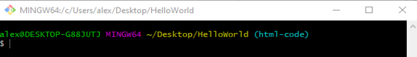
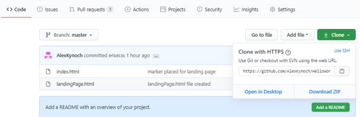
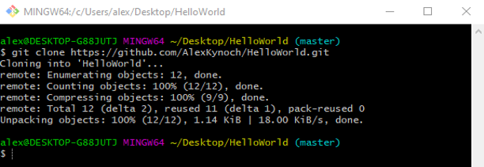
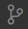
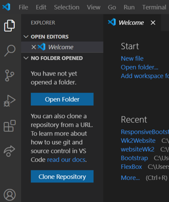
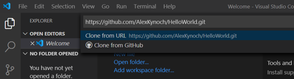
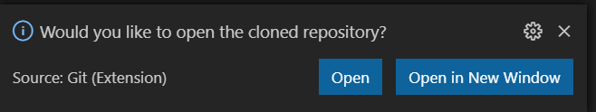

Home


Cloning
Cloning a repository to bash
Create a new folder.
Right click on folder and choose – git bash here to open a git bash window. This saves you having to open a bash window and navigate to your folder as it is already there.
when you clone a repository you create a local copy of all the files it contains. Sometimes we might want to use someone elses repository, make changes to it and send a pull request to the owner for approval - or we might just want to clone our own. to use in another folder. To clone a repository go to GitHub find repository and click clone and copy the url
 Cloning a repository to Visual Studio Code
To clone a repository into Visual Studio Code click on the git icon.
Click Clone Repository.
Add the url of the repository from GitHub.
Choose which folder to put it in.
And open, now you can access the files in Visual Studio Code.